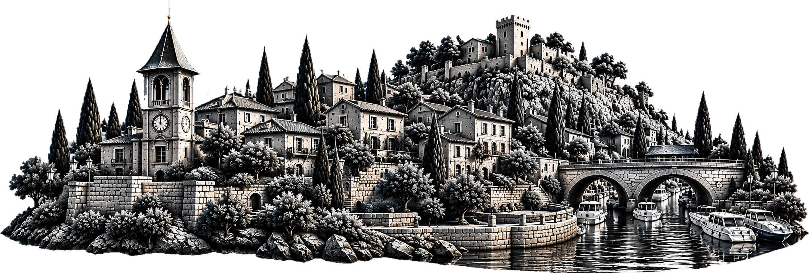
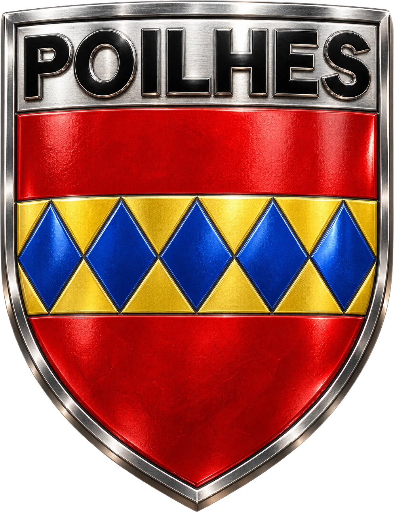

Village
Blason
Titre
Glisser : déplacer · molette ou + / − : taille · clic puis flèches : déplacer au pas



Choisis ton engin : le village est reconstruit d’après le LiDAR et les photos de l’IGN.
Flèches ou ZQSD · Espace saute · en l’air F looping, G 360 · P au skatepark · V caméra